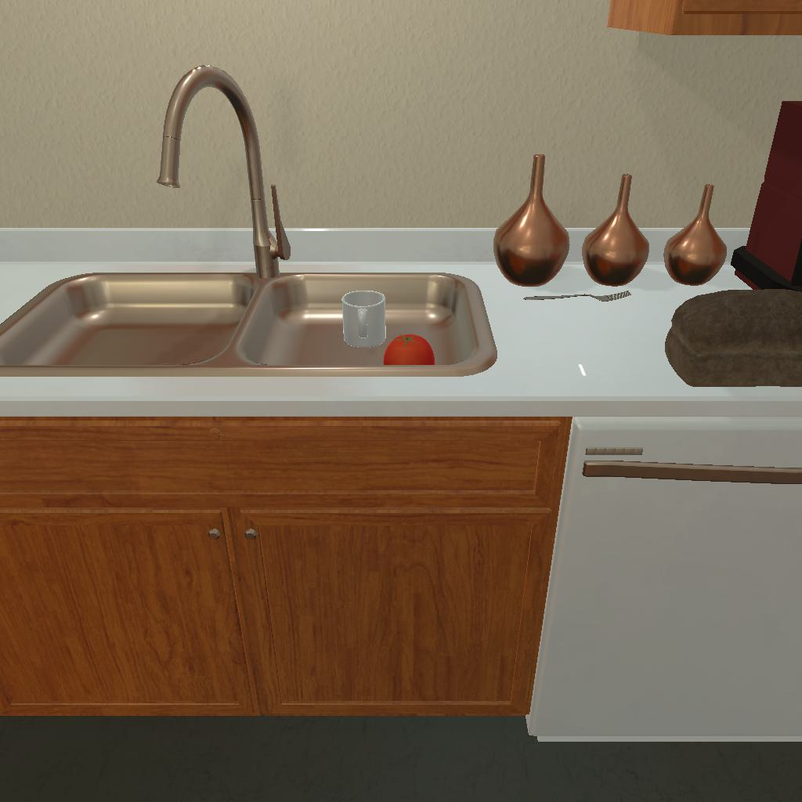

---------------------------------------------------------task: 17---------------------------------------------------------
--------------------------------------------------------------------------------------------------------------------------------------------------------------------
--------------------------------------------------------------------------------------------------------------------------------------------------------------------
Step:--------------------------------------------------------------------------9-------------------------------------------------------------------------------
----------------------------------------
VLM Prompt:
Image1:
Image2:
Image3:
**Instruction**
1. Analyze the provided images to identify all visible household objects and compare the difference between images (e.h. whether the object is opened or not and taken on hand or not), focusing on those relevant to the task description "put a cool pan in stoveburner."
2. Use the analysis of images and the task hint "The agent must find an object of the desired type, pick it up, go to a fridge, cool the object with the fridge, then find the correct location to place it, and put it down there. The agent does not need to use the fridge button or open the fridge to cool the object, and the agent just needs to do action that is "cool the object with the fridge"." to answer the question: what is the most reasonable action in the choices for the task description "put a cool pan in stoveburner"?
3. Decide and write the answer using the template: The answer is: (i): , where i is the real number. If there is no desired object in images, search every place based on **Initial Observation** to find the object. And if no one is exactly correct, choose a similar answer.
**Initial Observation**
You are in the middle of a room. Looking quickly around you, you can see cabinet (1-14), countertop (1-2), microwave (1), drawer (1-5), sink (1), sinkbasin (1), coffeemachine (1), stoveburner (1-4), toaster (1), fridge (1), diningtable (1), garbagecan (1), safe (1)
**Answer Choices**
(1): go to cabinet 2
(2): go to cabinet 3
(3): go to countertop 1
(4): go to cabinet 4
(5): go to cabinet 5
(6): go to microwave 1
(7): go to cabinet 6
(8): go to drawer 1
(9): go to drawer 2
(10): go to drawer 3
(11): go to cabinet 8
(12): go to sink 1
(13): go to sinkbasin 1
(14): go to coffeemachine 1
(15): go to cabinet 9
(16): go to cabinet 10
(17): go to drawer 4
(18): go to cabinet 11
(19): go to stoveburner 1
(20): go to stoveburner 2
(21): go to stoveburner 3
(22): go to stoveburner 4
(23): go to cabinet 12
(24): go to toaster 1
(25): go to drawer 5
(26): go to countertop 2
(27): go to fridge 1
(28): go to cabinet 13
(29): go to cabinet 14
(30): go to diningtable 1
(31): go to garbagecan 1
(32): go to safe 1
(33): open cabinet 7
(34): close cabinet 7
(35): examine cabinet 7
**Answer**
Let's think step by step by following the instructions.
----------------------------------------
----------------------------------------
Original Response:
First, we need to identify all visible household objects in the images that might be relevant to the task of "put a cool pan in stoveburner."
Image1 shows a microwave on the countertop, but no pans are visible.
Image2 is a close-up of wood texture and does not show any objects.
Image3 shows a sink with a cup and a tomato, a countertop with some pots, and a closed dishwasher.
Based on the initial observation, we know there are cabinets, drawers, and a fridge that we can search for a pan.
Since the task requires us to find a pan and cool it, we need to find a pan first. Pans are typically stored in cabinets or drawers near the stove. Cabinets 2, 3, 4, 5, 6, 8, 9, 10, 11, 12, 13, and 14, as well as drawers 1, 2, 3, 4, and 5, could all potentially contain a pan. However, since no pans are visible in the images, we need to search for one.
Once we find a pan, we need to cool it with the fridge. The task hint specifies that we don't need to interact with the fridge buttons or open the fridge to cool the object, so we just need to "cool the object with the fridge."
Considering the steps required for the task and the objects mentioned in the initial observation, the most reasonable action from the choices provided would be to search for a pan. Since the images do not provide enough information about the exact location of the pan, we should search the most likely places where a pan might be stored.
The answer is: (1): go to cabinet 2
This action is reasonable because cabinet 2 is one of the storage spaces near the stove where a pan could be stored, and it is one of the first places to check based on the initial observation and common kitchen organization. If the pan is not there, the agent can continue searching the other cabinets and drawers listed in the initial observation.
----------------------------------------
----------------------------------------
>>> Refine Original VLM Response and Get Pure Action: go to cabinet 2
This action is reasonable because cabinet 2 is one of the storage spaces near the stove where a pan could be stored, and it is one of the first places to check based on the initial observation and common kitchen organization
----------------------------------------
-----------------------------------------------------------------
Running time: 22.858022689819336 seconds
Total Money: 10.183930000000002
-----------------------------------------------------------------
-----------------------------------------------------------------
Text Observation:Nothing happens.
-----------------------------------------------------------------
UNSUCCEED